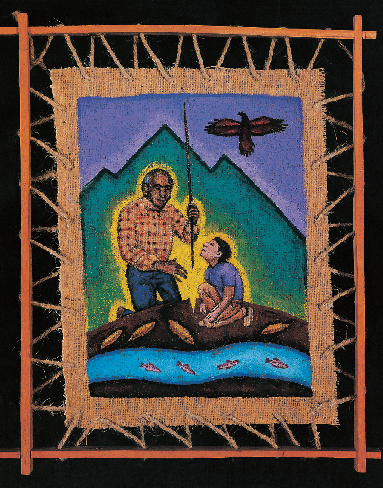

14

14
15

I HONOR
MY GRANDFATHER
written by George Crespo
This is my grandfather, Abuelo Antonio. (Abuelo means “grandfather” in Spanish.) He lived on a farm in Puerto Rico. I painted him holding a traditional planting stick and releasing seeds into the ground. He loved working with plants. I am next to Abuelo, looking up at a hawk. When I was a child there was a hawk that followed me everywhere, even in my dreams.
You can see four tuber vegetables, like the ones Abuelo farmed. These vegetables were left to us by the Tainos, our indigenous Puerto Rican ancestors.
At the bottom of the painting is an underground river that ran under the farm. Since the beginning of time, the river has been carving out huge underground caves. Not long ago I went to visit the river. The land above it belongs to the government now. It no longer belongs to my family. At first I was sad, but then I realized that when I am quiet, I can feel the river running inside me. It lives inside me, just like my grandparents and my Taino ancestors.